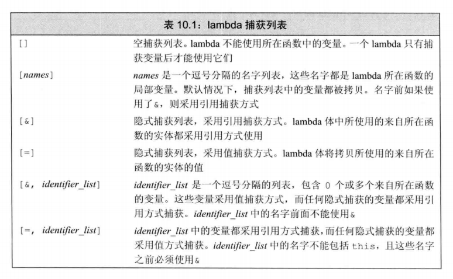
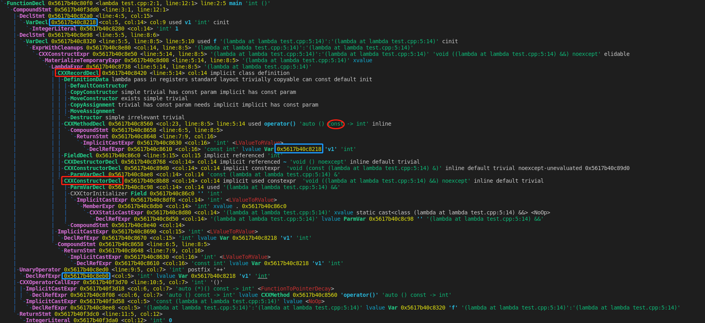

从 PL 的角度深入剖析 C++11 中的 lambda 表达式（我以为我懂了系列！）
前言
在使用 C++11 的标准库算法的时候，常常需要传入一个可调用对象作为实参，那么到底什么是可调用对象呢？从语法层次来说，能够使用调用运算符（）的对象就是可调用对象，即若 obj 是一个可调用对象，那么语法 obj([arg]) 是合法的。C++11 提供了四种可调用的对象，其中我们用的最多的就是函数和函数指针；通过对类重载函数运算符，该类的对象也是一种可调用对象；还有一种可调用对象就是 lambda 表达式。
重载函数调用运算符的类
如果一个类重载了函数调用运算符，则该类的对象称为函数对象，我们则可以像使用函数调用一样使用该类的对象。注意，重载的函数调用运算符仍然是一个类的成员函数，在其函数体中，依旧可以访问到类的其他成员变量，这使得其与普通函数有了很大的区别，普通函数仅仅能访问通过函数实参传递的值，但是类中重载的函数调用运算符却可以访问类的其他成员，这无疑使得其功能比其普通函数更强大。因为这样的类可以同时存储状态，所以与普通函数相比它们更灵活。
考虑一种情形，我们需要给用户提供一个接口，用户输入一个保存着若干 string 对象的 vector 对象，我们给用户打印出其中所有的 string，并且用户可以指定自己的流和分隔符。如果我们通过一个函数来实现这个功能，有两种方式来实现，如下：
1 | /************************ 第一种实现方式, 接受三个实参 ************************/ |
对于第一种实现方式，用户在每次调用的时候如果想使用自己的输出流和分隔符，都必须显示的指定，增加了使用接口的复杂性；而对于第二种方式，输出流和分隔符定义为全局变量，会破坏代码的封装性，甚至可能引入不必要的麻烦。这时候，函数对象的作用就派上用场了，我们可以定义一个类如下：
1 | class PrintString |
这样，用户每次在使用前只需要先定义一个对象，再直接通过该对象来调用接口打印即可，可以注意到，仅仅需要定义一次对象，在初始化的时候指定输出流和分隔符，用户就可以方便的使用接口，通过类的封装性，将状态保存在了类中，将上述两种方式的优点都结合在了一起。
使用 lambda 表达式定义临时函数对象
什么是谓词？谓词就是一个可调用表达式，其返回结果是一个能用作条件的值。根据谓词的定义可知，返回类型为 bool 的可调用对象就是一个谓词。标准库算法使用的谓词分为两类：一元谓词，即只接受单一参数；二元谓词，即只接收两个参数。比如，函数 bool isShorter(const string &s1, const string &s2) 就是一个二元谓词。
问题引入
考虑一种情形，我们需要提供给用户一个函数，用户输入一个保存着若干 string 元素的 vector 对象和一个 string::size_type 参数， 该函数先将用户输入的 vector 按照其 string 元素的字典序排序，然后删除冗余的元素，再按照 string 元素的长度从小到大排序，同时打印出 string 元素长度大于等于用户输入的第二个参数的 string 元素，要求尽可能的使用标准库中算法。我们可以实现如下：
1 | static bool isShorter(const string &s1, const string &s2) |
分析以上的代码，我们可以发现很严重的问题，为了使用 stable_sort 和 for_each 标准库函数，我们分别定义了两个函数 isShorter 和 print，分别作用二元谓词和一元谓词传递给 stable_sort 和 for_each ，这两个函数很简短，而且仅仅被使用了一次。为了使用 find_if 标准库函数，又因为 find_if 只能接受一元谓词，这样就不能将 sz 作为参数传给某个函数来作为 find_if 的谓词，所以我们定义了一个 Finder 类，用来保存 sz 这个状态，在使用 find_if 时传入一个临时的函数对象 Finder(sz)，同样的，Finder 类只被临时使用了一次。这就是 lambda 表达式出现的契机，用来代替这些被临时定义使用的可调用对象，我们可以把 lambda 表达式理解为一个未命名的函数，但他又不同于一般的函数，他有一个很大的特点就是可以捕获状态，但又不需要声明一个新的类来保存状态，而其实在编译器内部对 lambda 表达式的处理就是生成了一个未命名的类，并通过 lambda 表达式生成该未命名类的未命名函数对象。因此对于那些我们只要用一次的简短的函数或函数对象来说，利用 lambda 表达式能极大的增强代码的封装性和可读性。具体利用 lambda 改进后的代码，在以下概述其用法后给出。
ambda 表达式
一个 lambda 表达式表示一个可调用的代码单元，我们可以先将其理解为一个未命名的内联函数。与普通函数相似，一个 lambda 具有一个返回类型、一个参数列表和一个函数体，但与函数不同，lambda 可以定义在函数的内部。lambda 表达式的形式如下：
其中，capture list 是一个 lambda 所在函数中所捕获的局部变量列表，其标识了一个 lambda 表达式的开始，是不可省略的；return type 、parameter list 和 function body 和任何普通函数一样，分别表示返回类型、参数列表和函数体，与普通函数不同之处在于 lambda 必须使用 C++11 中的尾置返回来指定返回类型。但是我们可以忽略参数列表和返回类型，忽略参数列表则相当于指定一个空参数列表，忽略返回类型，lambda 根据函数体中的代码推断出返回类型。注意，与普通函数不同的一点是 lambda 不能有默认参数。例如，我们可以定义一个不接受任何实参且返回值为空的 lambda 表达式如下：
1 | auto func = []{return 0;}; |
根据 lambda 表达式的定义，我们可以将上述问题中的 isShorter 函数用 lambda 表达式实现，运用stable_sort 标准库函数，将 print 函数实现用于 for_each 标准库函数，如下：
1 | stable_sort(words.begin(), words.end(), [](const string &s1, const string &s2) -> bool |
1、lambda 表达式和普通的函数有什么区别？
lambda 表达式可以定义在函数内部，而普通函数不行；lambda 表达式必须使用尾置返回符，而普通函数不一定；lambda 表达式可以忽略参数列表和返回类型，但普通函数不可以；lambda 表达式不可以有默认参数，但普通函数可以。
捕获列表
一个 lambda 表达式由一组中括号括起来的捕获列表标识开始，到底什么是捕获列表呢？我们可以初步将其理解为一种函数参数的传递方式，就像前面说的，将 lambda 理解为一个未命名的内联函数一样，捕获列表是其一种特殊的传递参数的方式，且其接受的参数只能是 lambda 表达式所在函数的局部非 static 变量（因为 static 变量和全部变量可以直接在 lambda 函数体中直接使用，例如上述的 cout）。类似于参数传递，变量的捕获方式可以是值捕获，但是与调用时的参数传递不一样，被捕获的变量的值是在 lambda 创建时的拷贝，而不是调用时的拷贝。如下代码（从函数的角度也许很难理解这是为什么，其实是因为 lambda 底层并不是简单的函数，具体如何，后续会通过语法树的处理方式给出）：
1 | void func1() |
这样，由于 lambda 表达式捕获列表的作用，我们可以将上述问题中的 Finder 类用 lambda 表达式替代，运用 find_if 标准库函数，将 Finder(sz) 保存状态的方式改为对 sz 的捕获，如下：
1 | auto wc = find_if(words.begin(), words.end(), [sz](const string &s) -> bool |
通过 lambda 表达式，我们的 biggies 函数就无需再定义其他的函数和类了，极大的增强了代码的封装性，也更加清晰可读，其最终版实现如下：
1 | void biggies(vector<string> &words, string::size_type sz) |
同样捕获的方式也可以是引用捕获。如下代码：
1 | void func2() |
值捕获就是在创建 lambda 表达式的时候进行变量的拷贝，这就要求变量可以支持拷贝操作。这就使得引用捕获是很有必要的，因为有些对象禁用了拷贝功能，只能通过引用传递，比如流对象。同时，我们必须确保被引用的对象在 lambda 执行的时候是存在的，lambda 捕获的都是局部变量，而局部变量都是在栈空间中存放，当函数结束后，这些局部变量都不复存在了，比如某种情形下，某个函数返回一个 lambda 表达式，则与函数不能返回一个局部变量的引用一样，此 lambda 也不能包含引用捕获。
除了显式的列出我们希望使用的来自所在函数的变量之外，还可以让编译器根据 lambda 体中的代码来推断我们要使用哪些变量，为了指示编译器推断捕获列表，应在捕获列表中写一个 & 或 = 。& 告诉编译器采用捕获引用方式，= 告诉编译器采用值捕获方式。例如，我们可以重写传递给 find_if 的 lambda：
1 | find_if(words.begin(), words.end(), [=](const string &s) -> bool |
lambda 表达式捕获列表总共如下几种使用方式：

可变 lambda
对于值捕获的变量，lambda 在函数体中不能改变其值，如果我们希望改变一个被捕获变量的值，就必须在参数列表首加上关键字 mutable，如下：
1 | void func1() |
编译器到底如何处理 lambda 表达式
之前一直在说，把 lambda 表达式当成一种特殊的未命名的内联函数就好了，但实际上，其根本不是一个函数，那到底是什么呢？其实第二节的标题已经给出了答案，lambda 表达式是一个函数对象，在定义一个 lambda 表达式的时候，相当于编译器为我们定义了一个临时的类，该类重载了函数调用运算符，同时对于引用捕获的变量，编译器无须在 lambda 产生的类中将其存储为数据成员，而对于值捕获的变量，由于其需要被拷贝到 lambda 中，因此这种 lambda 产生的类就必须为每个值捕获的变量建立对应的数据成员，同时创建构造函数。若将一个变量初始化为一个 lambda 表达式，则相当于初始化了一个该临时类的对象，而在调用的时候就相当于调用了该类的函数重载运算符。例如以下程序，在 main 函数中使用的 lambda 表达式将会产生形如 A 的类：
1 | class A |
可见，重载的函数调用运算符带 const 修饰，所以通过值捕获的变量不能在 lambda 表达式的函数体中被修改，同时类 A 还会定义一个数据成员来保存捕获的值，以及一个构造函数来构造其对象。我们可以通过将其在 clang 中的语法树 dump 出来：

可以很明显的看到，lambda 表达式生成了一个类（CXXRecordDecl结点 ），该类会有一个构造函数，以及其重载的函数调用运算符，而且带上了 const 修饰，这就是为啥在其函数体中不能修改值捕获的变量的原因。这里在函数体中其显示对 v1 变量的引用直接指向了定义 v1 的结点，我也没明白这是 clang 带来的优化还是怎么的，但是此处我特意将 ELF 文件反汇编看了，确实是生成了一个大小为 4 字节的类，然后在 lambda 表达式中对 v1 的引用也是访问的这个类对象的内存空间，也就是说明这个生成的类确实有一个数据成员用来保存 v1 的值。
总结
以往，我们接触最多的可调用对象是函数或者函数指针；但是由于 C++ 中的类可以重载函数调用运算符，所以有了函数对象这种可调用对象；又由于在很多地方我们的代码（如标准库利用 GP 手段定义的函数）需要一个简单的函数，并且这个函数并不会在其他地方被使用，相当于我们需要一个特殊的临时函数的时候，为了增强代码的封装性，我们完全可以用 lambda 表达式这种可调用对象来替代一个新的函数定义和类的定义，此时它起的作用就相当于匿名函数。
参考资料：《C++ prime》